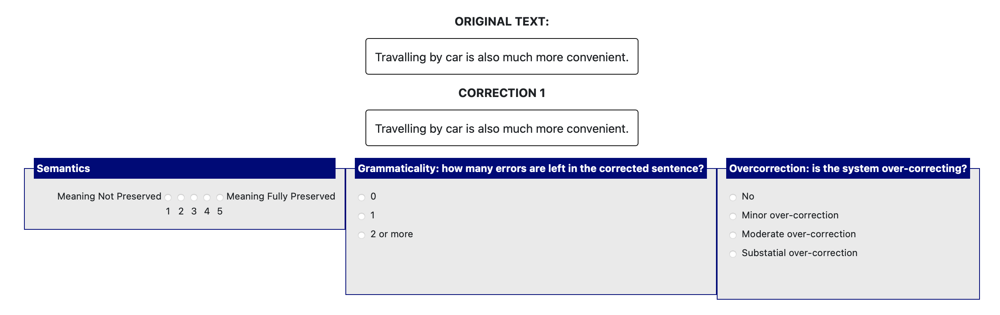

Human evaluation of Grammatical Error Correction IMPORTANT INFORMATION: We are conducting this research on the quality of text simplification, summarization, and grammatical error correction (GEC). This is the third study and looks at GEC. Grammatical Error Correction (GEC) is the task of automatically detecting and correcting errors in text. The task not only includes the correction of grammatical errors, such as missing prepositions and mismatched subject-verb agreement, but also orthographic and semantic errors, such as misspellings and word choice errors respectively. You will be asked to read some sentences and their corrected versions and rate them according to the criteria specified below. Note that not all sentences include grammatical errors, if they do not, we would expect the corrected version to be identical to the source. Some of the content you will see is human generated, other is AI generated, but you will not be told which is which as this is a blind research. As the interface is not mobile / tablet friendly, we ask that you complete this study using a laptop or desktop. This GEC research will take about 4 hours, and you should only start working on this research if you can commit to do it in full. To make things simpler, we are splitting these 4 hours into 4 separate studies taking about one hour each, which you can take on separate days. All these 4 one-hour studies should be completed by the end of Wednesday 17th May. This is study part 1 of 4. A link to the following 3 studies will be sent once you have accepted this commitment. Base pay is £12 per hour. Once you've completed the 4 studies, we will review the work, and if of a satisfactory quality, we will award a 10% discretionary bonus. In the study you're about to start, which we estimate should take one hour, you will be shown 25 pieces of text written by learners of English taken from an open source GEC dataset. Alongside each of them, you will be shown 4 different possible corrections of the text. The purpose of GEC is to rewrite the source sentence such that the corrected version is free of any grammatical errors which may be present in the source, but at the same time doing it with the minimum number of edits possible, without paraphrasing or making unnecessary syntax changes, unless absolutely necessary. We ask that you carefully read the original text and rank each of the 4 corrected versions according to the following metrics, which are defined below. A GEC box would look as follows (you will have 4 of these per source text). The definition of the criteria you will be asked to rate the corrections on is below. Please ensure you familiarise yourself with the criteria before proceeding. 
NOTE: please take a screeshot of this page for your future reference as you may not be able to access it again once you start the survey. -
Semantics
This assesses whether the meaning of the text is preserved following the GEC. Semantic preservation is assessed on a 5-point Likert scale from 1 (Meaning Not Preserved) to 5 (Meaning fully preserved). NOTE: You should penalize corrections which change the meaning unnecessarily. For example, the sentence "I wentt at Rome for my birthday" should be corrected to "I went to Rome for my birthday". A correction such as "I went to Rome for my anniversary" should be penalised in this category as they introduce unnecessary changes to the meaning. -
Grammaticality
This assesses the quality of the correction and answers the question "How many errors are left in the corrected sentence?". Please provide a count of the remaining errors, regardless of whether they were present in the source or they were newly introduced errors in the supposed corrected version. -
Over-correction
Since there can be multiple ways to correct a sentence, this assesses whether the correction is unnecessarily verbose or makes unnecessary syntax changes. The best correction should be done with the minimum number of edits. For example, if the sentence "I wentt at Rome for my birthday" is corrected to "I decided to go to Rome for my birthday" this should be penalized under this category because it contains unnecessary syntax changes, even though the final sentence is grammatically correct. This metric answers the question: Is the system over-correcting or making unnecessary syntax changes? The answers should be "No", "Minor over-correction", "Moderate over-correction" or "Substantial over-correction".
NOTE: please take a screeshot of this page for your future reference as you may not be able to access it again once you start the survey.